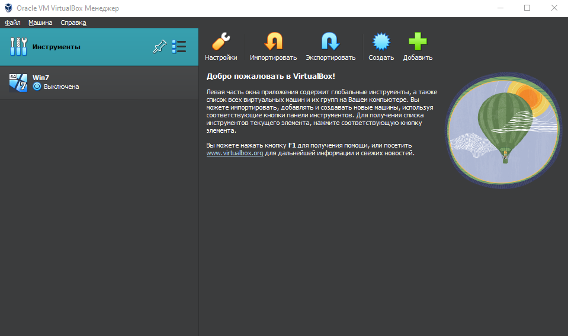
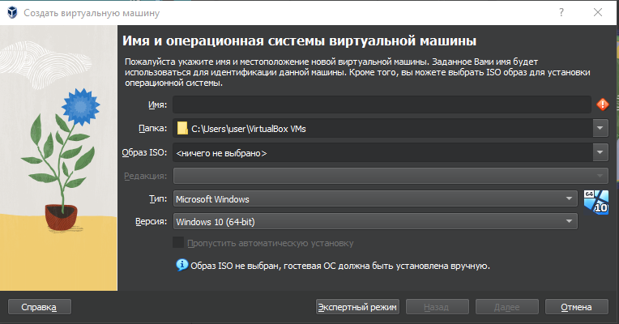
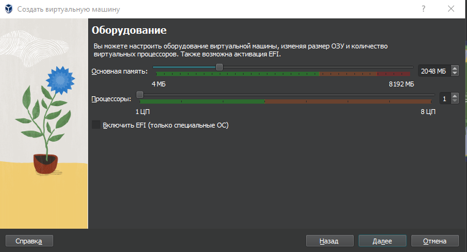
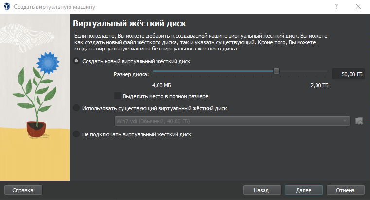
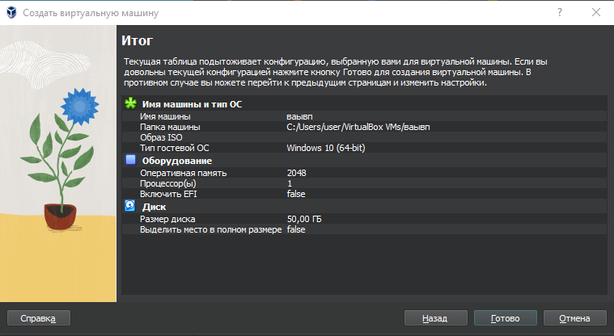
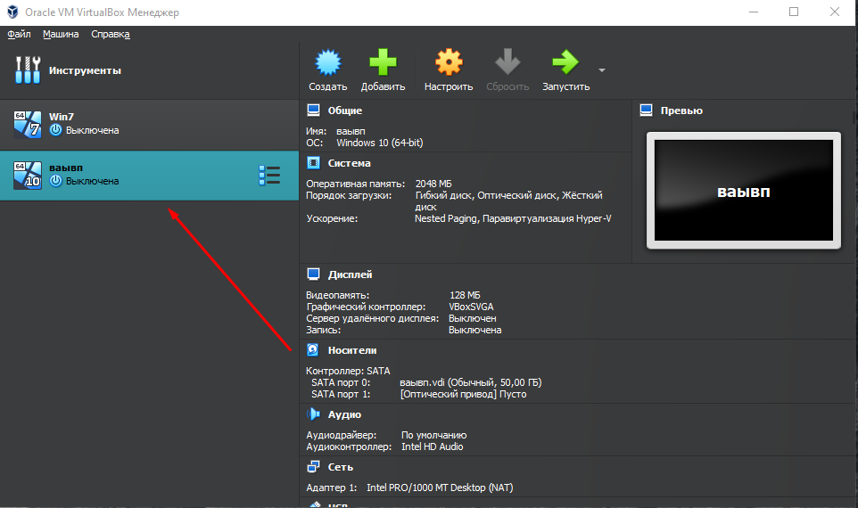
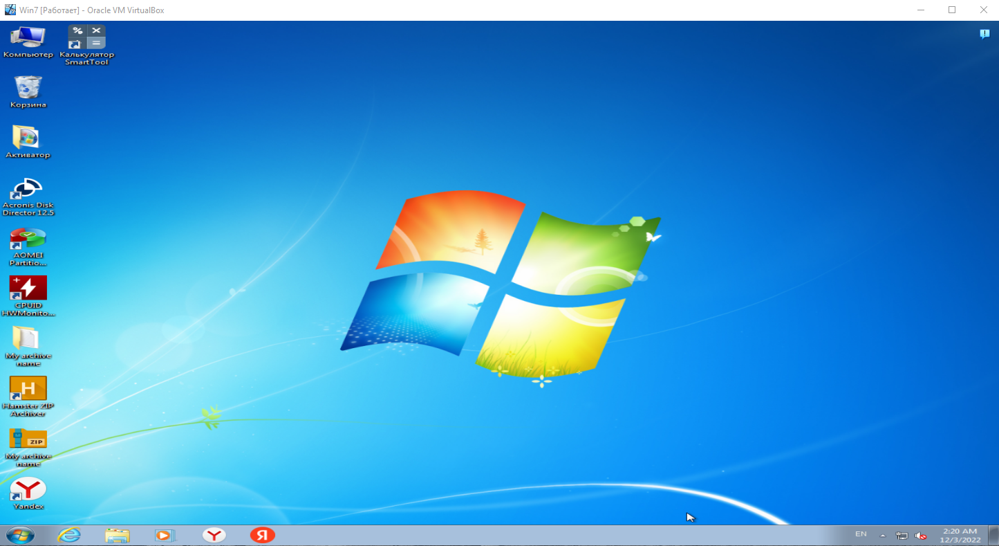

VirtualBox – это эмулятор, позволяющий создать виртуальную машину, в которой симулируются аппаратные устройства и программная среда. Разработчиком данного приложения является компания InnoTek, которая распространяет данное приложение с открытым исходным кодом.
Инсталляция не представляет собой ничего сложного – скачайте программу и запустите установщик. Следуйте простым инструкциям и дождитесь завершения процесса. После установки приложения вы увидите следующее окно:

Рисунок 6.1.1 – главное окно приложения VirtualBox.
Основной функционал выполняют большие кнопки «Настроить», «Импортировать», «Экспортировать», «Создать» и «Добавить». Также их функционал продублирован в верхней панели во вкладках «Файл», «Машина» и «Справка».
Для того, чтобы создать виртуальную машину, необходимо создать на кнопку «Создать» или на соответствующий пункт в меню «Машина».

Рисунок 6.1.2 – окно создания виртуальной машины.
Здесь необходимо указать основные параметры: имя, папку машины, тип операционной системы, версию платформы. Важной частью в данном этапе является указание образа ISO, в результате которого ОС определится сама, и он будет установлен, либо же данное действие можно сделать потом через кнопку «Свойства» в виртуальной машине.
Также имеется возможность тонкой настройки, нажав на кнопку «Экспертный режим». Здесь имеется возможность указать объем оперативной памяти и задать конфигурацию жесткого диска для виртуальной машины.
Снова нажмите кнопку «Далее». Появится следующее окно, где потребуется указать объем оперативной памяти и количество выделенных логических процессоров.

Рисунок 6.1.3 – окно настройки оборудования.
После указания этих параметров потребуется указать объем виртуального жёсткого диска или использовать уже существующий виртуальный жёсткий диск или вовсе не подключать его.

Рисунок 6.1.4 – окно создания виртуального жёсткого диска.
Далее идёт окно, показывающее настроенную конфигурацию. Чтобы завершить создание виртуальной машины, необходимо нажать кнопку «Готово».

Рисунок 6.1.5 – завершение создания виртуальной машины.
После этого в главном окне появится виртуальная машина.

Рисунок 6.1.6 – окно главного экрана после добавления виртуальной машины.
Далее, если вы указали образ ISO, то остаётся запустить виртуальную машину и пойдёт процесс установки операционной системы.
Если же вы этого не сделали, то потребуется зайти в пункт «Настроить» и потребуется во вкладке «Носители» указать ISO-образ операционной системы.
По завершению установки операционной системы, она будет сразу запущена. Также при выключенной виртуальной машине можно нажать двойным щелчком по ней или же нажав на кнопку «Запустить», виртуальная машина придёт в работоспособность. В результате будет запущена соответствующая операционная система.

Рисунок 6.1.7 – запущенная виртуальная машина.
В заключении, отмечу, что VirtualBox – лучшая бесплатная программа-эмулятор, которая имеет простой интерфейс и поддерживает множество операционных систем. По праву её можно назвать лучшей среди своей аналогов.